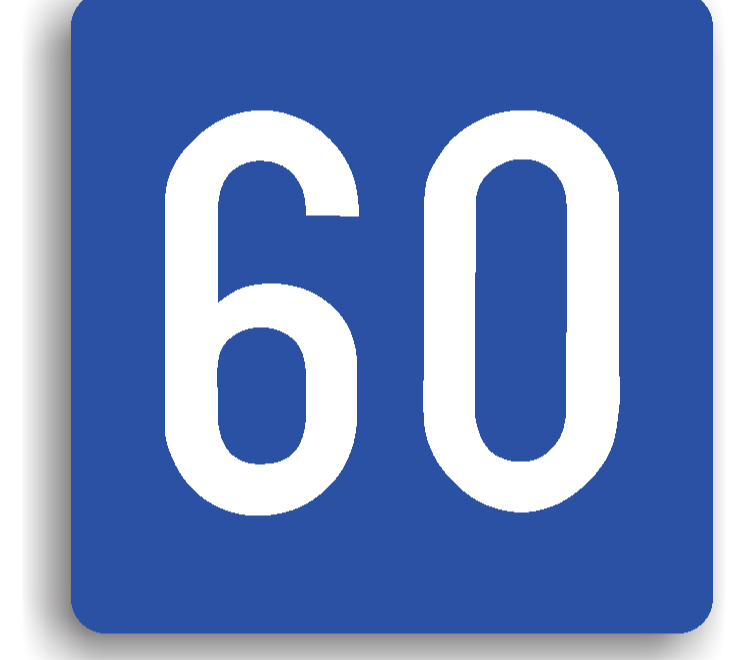

Raspunsuri corecte: 0
Timp: 0/20
Ce manevra este interzisa la intalnirea acestui indicator?

Mersul inapoi
Depasirea
Intoarcerea
Care este viteza minima cu care trebuie sa circule conducatorii auto la intalnirea acestui indicator?

70km/h
30km/h
50km/h
Ce semnifica urmatorul indicator?
Pasaj subteran pentru pietoni
Pasarela pentru pietoni
Coborare catre o statie de metrou
Ce semnifica urmatorul indicator?
Teren pentru camping
Loc pentru popas
Loc de joaca pentru copii
Ce semnifica urmatorul indicator?

Zona de pescuit
Zona in apropierea careia se afla un restaurant cu specificul aratat pe indicator
Zona in care pescuitul este interzis
La intalnirea acestui indicator:

Viteza minima este de 60km/h
Viteza maxima este de 60km/h
Viteza recomandata este de 60km/h
Adevarat sau fals: Pe autostrada, este interzisa imobilizarea voluntara pe banda de urgenta
Adevarat
Fals
Urmatorul indicator se instaleaza:

Pe un sector de drum unde circula autobuze
Pe un sector de drum unde este interzisa circulatia autobuzelor
In statiile de autobuz
Ce semnifica urmatorul indicator?
.png)
Teren pentru caravane si camping
Teren pentru camping
Cabana pentru turisti
Care este semnificatia urmatorului indicator?

Service Auto
Vulcanizare
Lucrari pe partea carosabila
Adevarat sau fals: La intalnirea acestui indicator, este interzis accesul tuturor autovehiculelor

Adevarat
Fals
Care este viteza maxima admisa pentru autovehicule la intrarea in zona mentionata de acest indicator?
5km/h
10km/h
20km/h
Ce este obligat sa faca conducatorul auto la intalnirea acestui indicator?
Sa circule cu o viteza de cel mult 30km/h
Sa aprinda luminile de intalnire
Sa isi anunte prezenta folosind mijloacele de avertizare sonora
Ce semnifica urmatorul indicator?

Imbarcare pe un ferry-boat
Imbarcare pe vagoane platforma de cale ferata
Port
Ce reprezinta indicatorul din imagine?

Supermarket
Loc de joaca pentru copii
Access internet